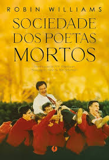

Em 1959 na Welton Academy, uma tradicional escola preparatória, um ex-aluno (Robin Williams) se torna o novo
professor de literatura,
mas logo seus métodos de incentivar os alunos a pensarem por si mesmos cria um
choque com a ortodoxa direção do colégio,
principalmente quando ele fala aos seus alunos sobre a "Sociedade
dos Poetas Mortos".